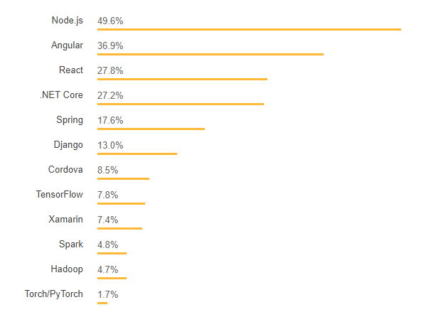

Trends change in every arena from fashion to education every day. Similar is the case of software development trends. In fact, in the era of digitalization, software development is one of those fields which is changing at an extremely fast pace.
Every year brings some brand new surprises for software developers. 2018 was the year of complete acceleration for the software development companies worldwide. From blockchain to Artificial intelligence, software technologies have remained a hot topic throughout the year.
According to a report by Gartner in 2018, the IT industry has seen dramatic growth. It has also forecast growth of 8.3 % in 2019.
Most of the full stack developers are using Javascript to program the software. The popularity of this language is due to its great adaptivity for hybrid applications as well.
In the stack overflow survey of commonly used programming languages, Node.js scored 49.9% and Angular scored 39.6%. Some other popular languages are React, .NET core, spring etc. Here is the graphical representation of their findings:

Major Research on Computer Science
Artificial Intelligence (AI)
Work in Artificial Intelligence in the EECS department at Berkeley involves foundational research in core areas of knowledge representation, reasoning, learning, planning, decision-making, vision, robotics, speech and language processing. There are also significant efforts aimed at applying algorithmic advances to applied problems in a range of areas, including bioinformatics, networking and systems, search and information retrieval. There are active collaborations with several groups on campus, including the campus-wide vision sciences group, the information retrieval group at the I-School and the campus-wide computational biology program. There are also connections to a range of research activities in the cognitive sciences, including aspects of psychology, linguistics, and philosophy. Work in this area also involves techniques and tools from statistics, neuroscience, control, optimization, and operations research. Berkeley Artificial Intelligence Research Lab (BAIR).
Human-Computer Interaction (HCI)
The Human-Computer Interaction Group studies interaction in future computing environments including the office, home, mobile and medical. Emphasis on context-aware systems, perceptual interfaces (like computer vision and speech), visualization and learning technologies. The BID lab is a 4000-sq ft lab designed to foster collaboration, and houses about 25 students from CS, ME, BioE and Art practice. The Tele-immersive lab has about 10 students and postdocs from EECS, Humanities and Dance department and has extensive collaboration with faculty from University of Illinois in Urbana-Champaign.
Cloud Computing
Cloud computing makes computer system resources, especially storage and computing power, available on demand without direct active management by the user. The term is generally used to describe data centers available to many users over the Internet. Large clouds, predominant today, often have functions distributed over multiple locations from central servers. If the connection to the user is relatively close, it may be designated an Edge server.
Major Cloud providers are Amazon Web Services (AWS), Microsoft Azure, Google Cloud Platform (GCP) , Oracle and IBM